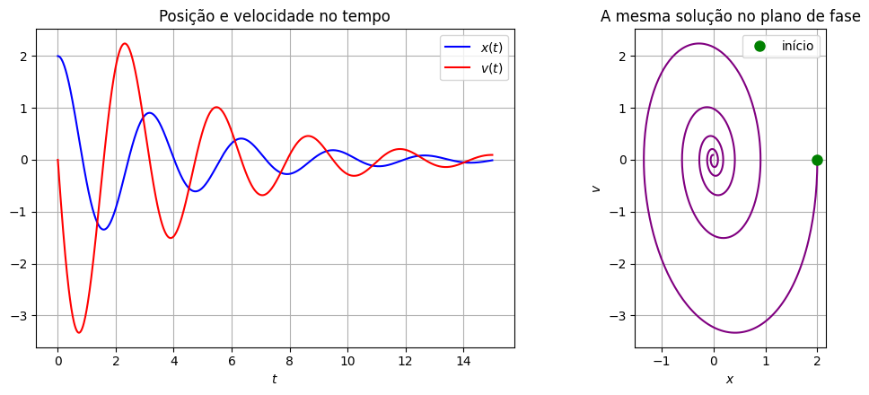
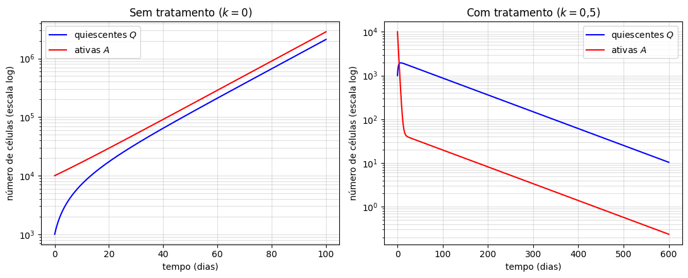
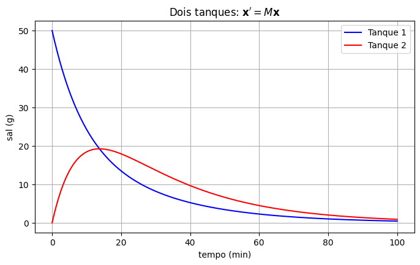

Modelagem com Sistemas de EDOs#
Muitos problemas envolvem várias quantidades que mudam ao mesmo tempo e influenciam umas às outras: duas populações de células que trocam indivíduos entre si, dois tanques ligados por canos, duas massas presas pela mesma mola, a temperatura do ar e das paredes de uma casa. Em todos esses casos, o modelo natural não é uma única equação, mas um sistema de equações diferenciais, uma para cada quantidade.
Nesta aula vamos ver alguns exemplos e, no final, descobrir que todos eles (quando lineares) cabem numa única forma compacta:
em que \(\mathbf{x}\) é um vetor com as incógnitas e \(A\) é uma matriz de coeficientes. Essa forma vai guiar todo o capítulo.
O oscilador harmônico como sistema#
Começamos por uma equação que já conhecemos bem, o oscilador harmônico livre:
Já fizemos esse truque lá na aula de classificação: introduzimos a velocidade como uma nova incógnita, \(v=x'\). Então \(x'=v\) e, isolando \(x''=v'\) na equação,
Uma equação de segunda ordem virou um sistema de duas equações de primeira ordem. A mesma ideia funciona para qualquer ordem: uma equação de ordem \(n\) vira um sistema de \(n\) equações de primeira ordem, usando \(y, y', \dots, y^{(n-1)}\) como incógnitas.
Essa troca tem uma vantagem visual: em vez de desenhar só \(x(t)\), podemos desenhar o par \((x(t),v(t))\) como uma curva no plano \(xv\), chamado de plano de fase. Veja um oscilador subamortecido das duas formas:
import numpy as np
import matplotlib.pyplot as plt
from scipy.integrate import solve_ivp
m, gamma, k = 1.0, 0.5, 4.0
def oscilador(t, estado):
x, v = estado
return [v, -(k/m)*x - (gamma/m)*v]
t = np.linspace(0, 15, 1000)
sol = solve_ivp(oscilador, (0, 15), [2, 0], t_eval=t)
x, v = sol.y
fig, axs = plt.subplots(1, 2, figsize=(11, 4.5))
axs[0].plot(t, x, 'b', label='$x(t)$')
axs[0].plot(t, v, 'r', label='$v(t)$')
axs[0].set_xlabel("$t$"); axs[0].legend(); axs[0].grid(True)
axs[0].set_title("Posição e velocidade no tempo")
axs[1].plot(x, v, 'purple')
axs[1].plot(x[0], v[0], 'go', markersize=8, label='início')
axs[1].set_xlabel("$x$"); axs[1].set_ylabel("$v$")
axs[1].set_title("A mesma solução no plano de fase")
axs[1].legend(); axs[1].grid(True)
axs[1].set_aspect('equal')
plt.tight_layout()
plt.show()

No plano de fase, a oscilação amortecida aparece como uma espiral que converge para a origem (o equilíbrio \(x=0,\ v=0\)). Vamos usar muito esse tipo de figura neste capítulo.
Células-tronco leucêmicas: quiescentes e ativas#
Na leucemia mieloide crônica (LMC), as células-tronco leucêmicas podem estar em dois estados: quiescentes (dormentes, fora do ciclo celular) ou ativas (dividindo-se). O tratamento padrão, com inibidores de tirosina-quinase (como o imatinibe), mata com eficiência as células ativas, mas praticamente não afeta as quiescentes — elas ficam «escondidas» do remédio.
Sejam \(Q(t)\) e \(A(t)\) as quantidades de células quiescentes e ativas. Um modelo linear simplificado, inspirado no modelo de Fassoni et al. (2018), é:
Cada termo tem uma interpretação:
\(aQ\): células quiescentes que são ativadas por unidade de tempo (saem de \(Q\), entram em \(A\));
\(bA\): células ativas que voltam à quiescência (saem de \(A\), entram em \(Q\));
\(pA\): proliferação das células ativas (só elas se dividem);
\(kA\): morte pelo tratamento (só as ativas são atingidas).
É um sistema acoplado: \(Q'\) depende de \(A\) e \(A'\) depende de \(Q\). Vamos simular com valores ilustrativos (por dia): \(a=0{,}01\), \(b=0{,}05\), \(p=0{,}1\), sem tratamento (\(k=0\)) e com tratamento (\(k=0{,}5\)):
a, b, p = 0.01, 0.05, 0.1
def leucemia(t, estado, k):
Q, A = estado
return [-a*Q + b*A, a*Q - b*A + (p - k)*A]
t = np.linspace(0, 600, 2000)
fig, axs = plt.subplots(1, 2, figsize=(11, 4.5))
sol = solve_ivp(leucemia, (0, 100), [1e3, 1e4], t_eval=np.linspace(0, 100, 500), args=(0.0,))
axs[0].semilogy(sol.t, sol.y[0], 'b', label='quiescentes $Q$')
axs[0].semilogy(sol.t, sol.y[1], 'r', label='ativas $A$')
axs[0].set_title("Sem tratamento ($k=0$)")
sol = solve_ivp(leucemia, (0, 600), [1e3, 1e4], t_eval=t, args=(0.5,), rtol=1e-8, atol=1e-10)
axs[1].semilogy(sol.t, sol.y[0], 'b', label='quiescentes $Q$')
axs[1].semilogy(sol.t, sol.y[1], 'r', label='ativas $A$')
axs[1].set_title("Com tratamento ($k=0{,}5$)")
for ax in axs:
ax.set_xlabel("tempo (dias)"); ax.set_ylabel("número de células (escala log)")
ax.legend(); ax.grid(True, which='both', alpha=0.4)
plt.tight_layout()
plt.show()

Sem tratamento, as duas populações crescem exponencialmente. Com tratamento, repare no gráfico da direita (em escala logarítmica): as células ativas caem muito rápido nos primeiros dias e depois passam a cair bem devagar, numa reta de inclinação pequena. Essa queda bifásica é exatamente o que se observa nos pacientes: uma resposta inicial rápida, seguida de um declínio lento, que é o que torna o tratamento tão longo. A fase lenta é ditada pelas quiescentes, que vão sendo ativadas aos poucos e só então são mortas.
Por que duas fases, com duas inclinações bem definidas? A resposta está em dois números associados à matriz do sistema, os autovalores — vamos voltar a este exemplo quando chegarmos lá.
Referência: A. C. Fassoni, C. Baldow, I. Roeder, I. Glauche. Reduced tyrosine kinase inhibitor dose is predicted to be as effective as standard dose in chronic myeloid leukemia: a simulation study based on phase III trial data. Haematologica, 103(11):1825–1834, 2018.
Outros exemplos rápidos#
Dois tanques interligados. Dois tanques de \(100\) L cada contêm água salgada. Entra água pura no Tanque 1 a \(6\) L/min; a mistura passa do Tanque 1 para o Tanque 2 a \(8\) L/min; do Tanque 2, \(2\) L/min voltam para o Tanque 1 e \(6\) L/min saem do sistema (os volumes ficam constantes). Pela mesma lógica «taxa que entra menos taxa que sai» da aula de modelagem de primeira ordem, as quantidades de sal \(Q_1,Q_2\) satisfazem
Duas massas acopladas. Duas massas \(m_1,m_2\) deslizam sem atrito, presas entre duas paredes por três molas \(k_1,k_2,k_3\) (a do meio liga as massas). Pela segunda lei de Newton,
São duas equações de segunda ordem; introduzindo as velocidades \(v_1=x_1'\) e \(v_2=x_2'\), viram um sistema de quatro equações de primeira ordem. (Lá no capítulo de ordem superior fizemos o caminho contrário: eliminamos variáveis para obter uma equação de ordem \(4\).)
Temperatura de uma casa. Sejam \(T_1\) a temperatura do ar interno e \(T_2\) a temperatura das paredes e do piso (que armazenam calor), e suponha a temperatura externa constante, que tomamos como referência (\(0\)). Pela lei de resfriamento de Newton, o ar troca calor com as paredes e com o exterior, e as paredes trocam calor com o ar:
Como as paredes têm muito mais massa, \(k_3\) é bem menor que \(k_1\): elas aquecem e esfriam devagar, «segurando» a temperatura da casa.
Uma forma única: \(\mathbf{x}'=A\mathbf{x}\)#
Repare que todos os sistemas acima têm a mesma estrutura: cada derivada é uma combinação linear das incógnitas, com coeficientes constantes. Por exemplo, no modelo de leucemia,
Toda a informação do sistema está na tabela de coeficientes. Vamos organizar as incógnitas num vetor e os coeficientes numa matriz:
e escrever o sistema inteiro como
(Aqui chamamos a matriz de \(M\) só para não confundir com a população \(A\).) O produto «matriz vezes vetor» está definido justamente para que isso funcione: cada linha da matriz, combinada com o vetor, reproduz uma equação do sistema. Do mesmo jeito,
De modo geral, um sistema linear de \(n\) equações de primeira ordem tem a forma
em que \(A(t)\) é uma matriz \(n\times n\) e \(\mathbf{g}(t)\) é um vetor. Se \(\mathbf{g}\equiv\mathbf{0}\), o sistema é homogêneo; caso contrário, não homogêneo (por exemplo, se entrasse água salgada nos tanques, ou se o oscilador fosse forçado). Assim como para uma equação só, se \(A\) e \(\mathbf{g}\) forem contínuas, o PVI com \(\mathbf{x}(t_0)=\mathbf{x}_0\) tem uma única solução. Neste curso vamos nos concentrar em \(A\) constante, de tamanho \(2\times2\) e \(3\times3\).
Repare que até o código em Python fica mais simples nessa forma: o lado direito do sistema é só um produto de matriz por vetor.
M = np.array([[-0.08, 0.02],
[ 0.08, -0.08]])
def tanques(t, x):
return M @ x # o sistema inteiro numa linha: x' = M x
sol = solve_ivp(tanques, (0, 100), [50, 0], t_eval=np.linspace(0, 100, 400))
plt.figure(figsize=(8, 4.5))
plt.plot(sol.t, sol.y[0], 'b', label='Tanque 1')
plt.plot(sol.t, sol.y[1], 'r', label='Tanque 2')
plt.xlabel("tempo (min)"); plt.ylabel("sal (g)")
plt.title(r"Dois tanques: $\mathbf{x}' = M\mathbf{x}$")
plt.legend(); plt.grid(True)
plt.show()

O que vem a seguir#
Para resolver \(\mathbf{x}'=A\mathbf{x}\) vamos precisar de algumas ferramentas de álgebra linear: operações com matrizes, sistemas de equações lineares (algébricas) e, principalmente, autovalores e autovetores. As próximas aulas fazem essa revisão, sempre de olho no que vai ser usado depois.